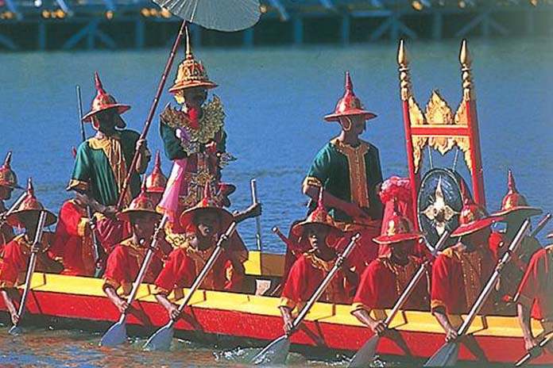
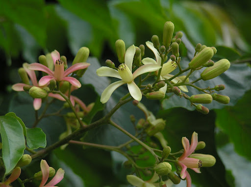

Tothalin(Tawthalin) : September
Written by Khin Myo Chit and Junior Win ( Flowers & Festivals )
6.Tathalin(Taw-tha-lin)
The season of Virgo,
when the golden Yinma is in bud.
Thesweeping wind wafts,
sweet odours
from the pleasant woodland.
In heavens above the clouds,
brilliant lights.
The king moon and
the biazing Square
are near each other.
Tothalin(Tawthalin) : September
Monsoon is thinning away and the skies are clearing.As the sun's ray steal through the drizzle,rainbow-coloured showers swing in the wind like bejewelled strings.
Sunny days ahead-you say hopefull,as you rake out the mildewed rugs,blankets and coats,all hungry for awisp of sunshine.There is romance in the air, as the ban on weddings is to be lifted with the end of the lenten season which is next month.Lovers who have been waiting all these months are now busy with their wedding plans.
The weather is fine and the wide brimming Irrawaddy river spreads out like a roll of matting.
The month of Taw-tha-lin: rain softly pat-patting,
The mighty river rolls out like matting.
So goes the saying. The river, calm and tranquil with dimpling waves, invites aquatic sportsmen. This is a month of boat races. From what we learn from songs and poems of old, boat races during the time of Myanmar kings displayed not only speed but also skill and grace.There are 37 styles of rowing on record. Each style has a name suggestive of a symbolic image and it is up to the people of today to stretch their imagination to visualize what it might look like.
Take names like "fairy plucking flowers'', and ''fairy offering flowers''.Did the boatmen gesticulate with their oars to suggest the picture of fairies revelling in the sylvan glades? Strokers named '' seagull-sweep" and "sea-gull- soar" creat pictures of racing boats sweeping and soaring over the river's surface.
Reagattas of olden days were help under royal patronage.The royal family, the king, queen, princes and princesses, had their own boats participating in the race. There was fun, colour and music galore. Boat songs were composed especially for the occasion. The boatmen wore varicoloured liveries matching the banners of their boats.Music boomed as the supporters of the compertitors hurled picturesque limmericks at one another.
It was on such an occasion that King Bodawpaya, who reigned from 1719 to 1819, won a somewhat dubious "victory" over the queen's.The royal regatta opened with the King's boat racing against the queen's.It so happened at one time that the king lost the race for three years running.
The king had a favourite courtier named U Paw Oo, who was his chum and playmate in his childhood days.U Paw Oo was wise and learned and above all was gifted with irrepressible wit and humour.When the king was in need of guidance or criticism or even remonstrance, there was not one minister who could dare the royal wrath and say what had to be said.It was then U Paw Oo who would play the court fool, and point out the way to sanity and better judgment.
As the mouth of Taw-tha-lin drew near and the preparations for the royal regatta was underway, the king was embarrassed by the veiled jibes and quips thrown at him by the queen and her ladies.They were sure that the queen's boat would win again that year.Bets were made and the king's boat had but a few takers.
For three years running,the king had taken defeat with good grace, but on the fourthyear,he felt that he could no longer be a good loser.Enough was enough. He had to win,that year,by fair or any other means.He had no one to fall back upon but U Paw Oo.Hehinted that U Paw Oo,asthe king'strusted henchman,should do something about it.How could afaithful servant suffer such a disgrace falling on his royal master?The king of course would not stoop to command U Paw Oo to conspire something unsportsman-like:rather that his clever servant should"do something about it"on his own.
U Paw Oo,as if sensing what the king meant,assured his master that things would be different that year. He added that he was the king of servant who knew his master's wishes by the mere nod of the royal head.The audience. U Paw Oo said,would see something different,something unpredictable that would take everyone, including the king himself,by surpruse.Since U Paw Oo was cleverly evasive about the details of the plan,the king had to be content with, "just wait and see,my royalmaster"!
The great day dawned.The king,queen and countiers took their place in the royal marquee.The air was tense with expectation and thrill,as theflourish of drums,cymbals and gongs announced the race open. The first to come into view was the queen's canoe flying coloured banners.People cheered as the bothmea displayed their skill and grace with their rowing styles.But where was the king's boat? The king cast an inquiring glance at U Paw Oo,who just grinned and nodded.His twinkling eyes relayed the message.'Just wait and see.Your Majesty"
" ...............like a burnished throne,
Burn'd on the water ................"
"Look - look - His Majestry's boat is coming in to the race " , the voices saug out. Music was sweet and haunting sugggstive of lotus blossoms floating on the water admiring their own beautiful refelctions. So did the barge, as the silver oar's "to the tune of flutes kept stroke and made the water which they beat to follow faster, as amorous of their strokes."
So the royal barge bowled along, dignified and stately, obliveious of the queen's canoe skinning away towards the goal. At the prow a bejewelled figurehead dazzles in the sun. At the helm was a comely fairy steering with her flowey soft hands. A bevy of nymphs threw roses and jasmins from aboard. They so perfumed the air that the winds were loversick with them.
There was a loud burst of cheering from the queen's supporters.They threw quips at the king's men. There were peals of laughter, no longer discreer or controlled. More jokes at the expense of the king. The kingwas aghast.He wished that he couls sink and sink miles underground.He could not very well yell for U Paw Oo and give him what he thoroughly deserved. He would only make a bigger fool of himself. U Paw Oo came closer to his royal mater"s side with a smug grin on his face. The king glowered at him threateningly.But U Paw Oo was not ratted.He said, " Your Majesty, can't you see how your barge has won a decisive victory, like loser of a little canoe runs away for her dear life in the vanguard. Never mind what common people say.It is only the wise and the great that know a victory when they see one!"
The king unseemly expletives were lost in the peals of laughter and cheering.The show went on with more mirth and fun.